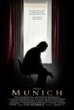
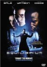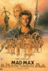
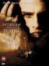
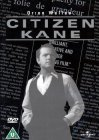
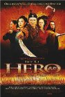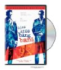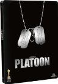
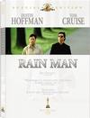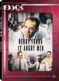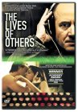
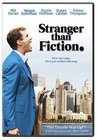
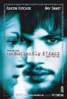
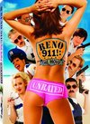
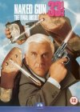
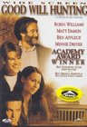
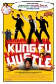
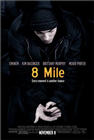
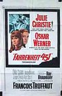
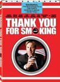
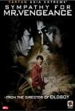
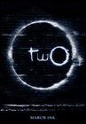
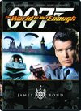
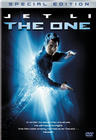
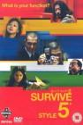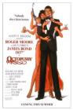
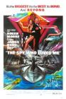
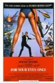
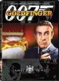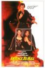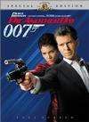
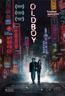
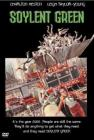
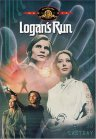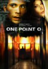
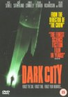
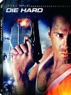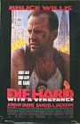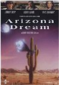
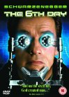

 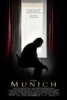
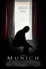
 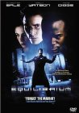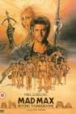
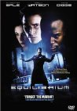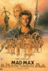. But man, remembering this movie just makes me think \"life is terrible.\"")


 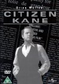
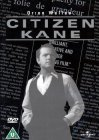


 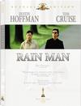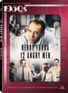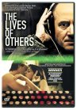
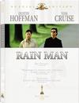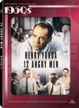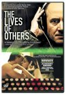


 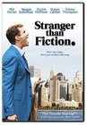
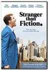 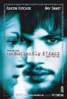
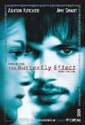


 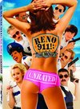
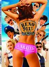

 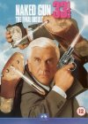
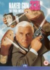

 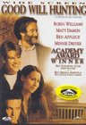
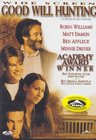

 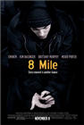
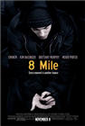
 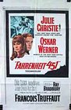
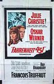


 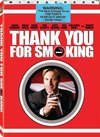
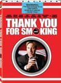

 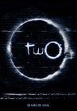
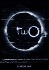watch it before I could really say I'd seen the whole IMDb list. I'm sure I had seen at least some scenes before, but others I'm not sure if the familiarity is from having seen the movie or from when I read the book in 8th grade.") 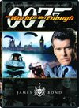
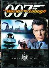 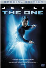
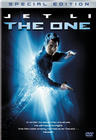

 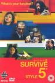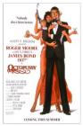
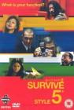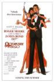
 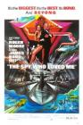
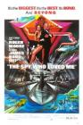
 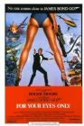
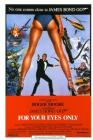
 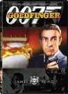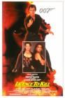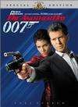
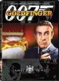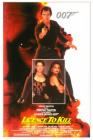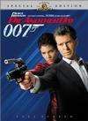
 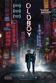
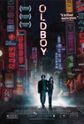


 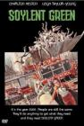
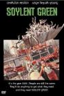
 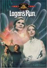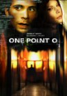
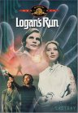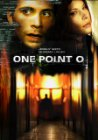 I can't help but enjoy it some. And my expectations were already so low that disappointment was nearly impossible. What was left was just the fun of seeing things and characters I enjoyed. I can't believe they had Christine from Phantom of the Opera as Bulma and Chow Yun-Fat as Roshi. Chi Chi was really cute. No Krillin unfortunately. Bulma did have her Dragonball radar and her capsule transportation. So, yeah, I wouldn't recommend this to anyone, but I couldn't help but watch it. Kamehameha ftw!")


 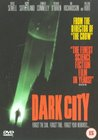
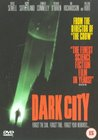

 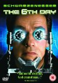
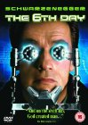